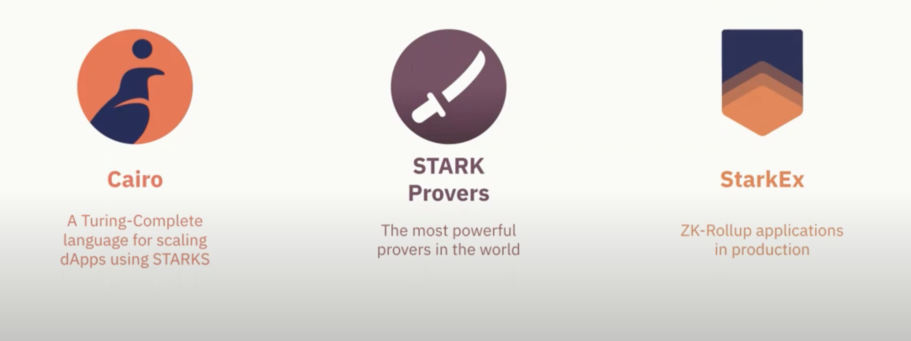

TWith an alpha mainnet launch in November 2021 that saw over 50 million transactions on its testnet and received raving reviews on its composability and transaction abilities, StarkNet could be seen as one of the leading ZK-rollups in the market right now. StarkWare, the company behind the project, announced further plans in 2022 to further decentralize the software as well as introducing plans to launch a StarkNet token.
What is StarkNet and how does it work?
In essence, StarkNet is a permissionless decentralized zk (zero-knowledge) rollup that offers scalable solutions for users within a secure Ethereum-like state. It fundamentally operates as an L2 (layer-2) network over the Ethereum blockchain and allows any DApp (decentralized application) to achieve unlimited scale for its computation without compromising security and composability.
In terms of scalability, StarkNet leverages upon its Stark Provers to prove large volumes of transactions. For context, Stark Provers were able to prove 300,000 transactions in a single proof back in 2020, which was a record-breaking number of proofs at the time.
Foundations of StarkNet
StarkNet largely relies upon three foundations: Cairo, Stark Provers, and StarkEx. They provide the underlying technology for secure and efficient decentralized transactions and smart contracts. Let’s have a quick look at these three foundations are participating in StarkNet.
WHAT ARE STARK PROVERS?
Stark Provers, or zk-STARKs, are an element towards the generation of cryptographic proofs. In essence, zk-STARKs, which operate in the Cairo programming language, ensure that the cryptographic proof that is sent to the verifer reveals no information about the exact transactions that entered the system. Instead, all the information available is within the final CI statement as opposed to the proof that is sent to the verifier.
In addition to privacy, zk-STARKs also provide scalability by allowing for the aggregation of many transactions into a single proof. This means that instead of verifying each transaction separately, they can all be verified together in a single proof, which reduces the computational load and improves efficiency. Of course, Stark Proofs are written in Cairo, and boasts reliable cryptography in itself.
StarkNet uses zk-rollups, which combines off-chain processing with on-chain verification using zk-STARKs. This allows for batch verification of many transactions in a single cryptographic proof, which significantly improves scalability.
WHAT IS STARKEX?
Tailored specifically for DApps that wish to leverage upon the scalability solutions on StarkNet and ZK-Starks, StarkEx is an application-specific scalability engine built on the Ethereum blockchain.
StarkEx aims to solve the scalability issues that plague DEXs, such as slow transaction processing times and high gas fees. It does this by leveraging off-chain computation and batching transactions together to reduce the load on the Ethereum network.
StarkEx uses a technology called zk-STARKs (Zero-Knowledge Succinct Transparent Argument of Knowledge) to enable off-chain computation without sacrificing the security and trustlessness of the Ethereum blockchain.
WHAT IS CAIRO?
The Cairo programming language is a high-level programming language designed specifically for writing smart contracts on the StarkNet blockchain platform, and is designed to be a secure and efficient language for writing smart contracts on StarkNet.
In tandem with StarkNet’s zero-knowledge proof system, Cairo is specifically designed to serve as a programming language that is highly secure and efficient in writing smart contracts that can operate on StarkNet.
What are the Fundamental Advantages of StarkNet?
StarkNet offers several fundamental advantages over other blockchain platforms, which we will be exploring further.
SCALABILITY
Currently, over 3,000 DApps are built on Ethereum, and the chain also powers the most number of NFT projects and their associated transactions.
The significant reliance on the Ethereum L1 chain has led to capability limitations and notably, network congestion as well, which results in delays in processing transactions for users interacting with DApps and projects built on Ethereum.
With the power of StarkNet’s zk-STARKs, the platform is able to offer high scalability solutions for applications on the Ethereum L1 chain by processing transactions off-chain, which reduces the burden on the Ethereum mainnet. This means that more transactions can be processed at a faster rate, which is essential for applications that require high throughput.
LOW GAS FEES
Transactions on the Ethereum mainnet can also be expensive due to high gas fees alongside delayed transaction times. StarkNet offers a more cost-efficient alternative by using zero-knowledge proofs to batch transactions and minimize gas fees. This means that developers can build and deploy decentralized applications on StarkNet at a lower cost.
ENHANCED SECURITY
StarkNet’s zero-knowledge proof system also offers a high level of privacy and security for transactions on the platform. This means that sensitive information about transactions and the parties involved can be kept private, which is important for applications that require a high level of confidentiality.
The Future of Starkware
While the STARK deck comprising of StarkNet, Cairo, StarkEx, zk-STARKs promises intriguing potential for both developers and users alike, it is important to bear in mind that builders wanting to take their project on StarkNet are required to first master the Cairo programming language. Nevertheless, the Stark rollup still enables any decentralized application to reach an infinite computational scale while maintaining the security and stability of the Ethereum network, promising the first step towards the global adoption of blockchain technology.
To build towards this goal, StarkWare is also continuing its efforts to further decentralize, primarily through the introduction of its up-and-coming StarkNet Token and the Stark Foundation. The former serves not only as a way to compensate builders on the Stark ecosystem, it also serves as a governance token needed to maintain and secure the ecosystem and decide on its values and strategic goals, and direct its evolution.
The Stark Foundation, on the other hand, will encourage the development of bottom-up mechanisms for community decision-making on essential technological questions, such as protocol updates, dispute resolution, and public goods funding. Both these initiatives are part of StarkWare’s plans to further decentralize itself, evolving into an iteration of a public good similar to that of Ethereum or the Internet.
StarkWare has also released plans for Cairo 1.0, an upgraded version of the Cairo programming language that will be more user-friendly to developers trained in different languages, in order to further incentivize builders to bring their projects on to StarkNet.
Closing Words
In a similar vein, Bitget Wallet (Previously Bitget Wallet (Previously BitKeep)) also values this ethos of decentralization by serving as the single largest non-custodial Web3 multi-chain crypto wallet in Asia. Thanks to its superior security, ease of use, and inclusiveness, Bitget Wallet (Previously Bitget Wallet (Previously BitKeep)) Wallet has become a long-favored solution for more than 8 million users worldwide, covering 168 countries in North America, Europe, and Asia. Bitget Wallet (Previously Bitget Wallet (Previously BitKeep)) currently supports over 250,000 types of cryptocurrencies across over 80 chains, including major ones such as Bitcoin, Ethereum, Polygon, BNB Chain, Fantom, and Solana, and has plans to continue working with promising projects in the future, such as StarkNet, to bring the world of decentralization to its users.